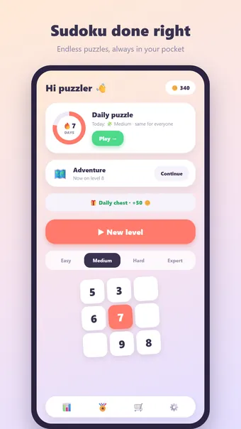
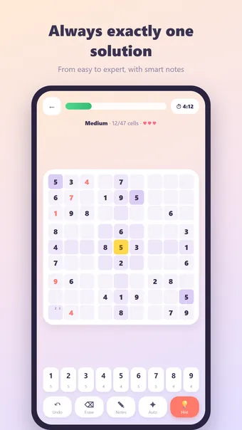
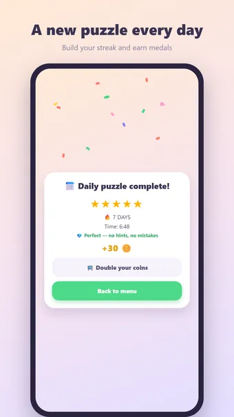
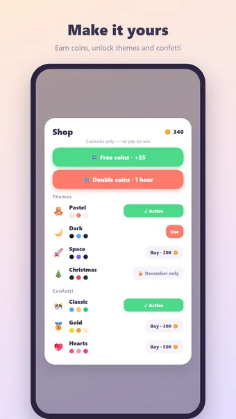

About Sudoku
Play Sudoku, the classic number puzzle — anytime, anywhere, fully offline. Fill the grid so every digit 1–9 appears exactly once in each row, column and 3×3 box!
How to play
Every puzzle is freshly generated and guaranteed to have exactly one solution. Tap a cell, pick a digit and use pencil notes for candidates. Mistakes show up immediately; three mistakes end the game.
Four difficulty levels
- Easy: plenty of digits filled in, perfect for a quick break
- Medium: the classic newspaper puzzle
- Hard: for the practised solver
- Expert: minimal help — for the true puzzler
Adventure mode
Play through hundreds of numbered levels that get progressively harder. Travel through colourful worlds, earn a medal on every level and grab milestone rewards along the way.
Daily puzzle
One unique sudoku every day, the same for everyone. Earn a medal of 1 to 5 stars and build a streak: 3, 7, 30 or even 100 days in a row!
Coins and themes
Earn coins with every completed puzzle and spend them on hints or new looks: Forest, Space, Neon, Wood, Marble, Christmas and Halloween. Cosmetic only — no pay-to-win.
And more
- Hints with coins
- Smart notes that clean themselves up
- 23 achievements, from your first puzzle to a hundred-day streak
- Detailed statistics: fastest time, flawless puzzles and more
- Zen mode: hide the timer and solve at your own pace
- Sound and haptic feedback (can be turned off in settings)
- Available in English, Dutch, Spanish, German, French and Portuguese
Free to play. The app shows ads, which you can remove with one optional purchase; no account required.
Frequently asked questions
Is Sudoku free?
Yes. Sudoku is free to download and play. The app shows ads, which you can remove with one optional in-app purchase.
Does Sudoku work offline?
Yes. Sudoku works without an internet connection, so you can play on a plane, on the train or anywhere without Wi-Fi.
Do I need an account to play Sudoku?
No. There is no sign-up or login: open the app and play. Your games and settings stay on your own device.
How do you play Sudoku?
Every puzzle is freshly generated and guaranteed to have exactly one solution. Tap a cell, pick a digit and use pencil notes for candidates. Mistakes show up immediately; three mistakes end the game.
Is there a new challenge every day?
One unique sudoku every day, the same for everyone. Earn a medal of 1 to 5 stars and build a streak: 3, 7, 30 or even 100 days in a row!
Where can I download Sudoku?
Sudoku is available for Android phones and tablets on Google Play. Use the button at the top of this page.
More games you might like
Nonogram
The classic nonogram. Endless puzzles and a fresh daily challenge.
Google PlayMinesweeper
The classic minesweeper. Endless minefields and a fresh daily challenge.
Google PlayBlock Puzzle
Fill the board exactly. Always solvable, a fresh challenge every day.
Google PlayLegal
Below you can find the legal documents that apply to Sudoku.
Contact
Questions, feedback or privacy requests? Reach out at joostmuijsenberg.dev@gmail.com.